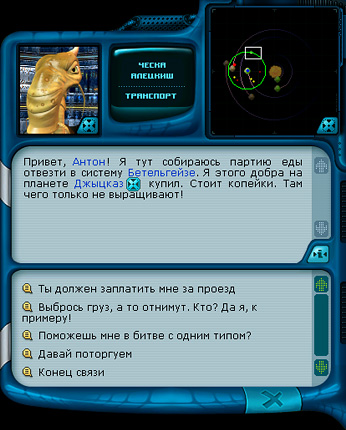
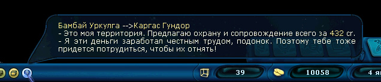

Руководство рейнджера > Экран
космоса > Разговор (T)
|
Руководство рейнджера > Экран
космоса > Разговор (T)
|
| Разговор (T) Можно вступить в разговор с капитаном другого корабля. Обычно капитан отвечает вам в зависимости от текущей ситуации. Если это торговый корабль, то он сообщит вам о своих планах: куда направляется, где был и какие там цены. Если это пират или рейнджер, то он может в зависимости от отношения к игроку или дать полезный совет, или предложить вам лететь своей дорогой и не совать нос в чужие дела. |

Используя диалог, можно заключить с кем-нибудь боевой альянс или попросить
прекратить атаку. Можно поторговать с другим кораблем, а можно хорошенько припугнуть
его и забрать у него деньги или часть товара. Рейнджеров можно приглашать к себе
на службу, предварительно обсудив условия партнерства.
Чтобы вступить в диалог с другим кораблем: 1. Нажмите кнопку "Разговор" (T). При этом внешний вид курсора мыши изменится 2. Щелкните по кораблю, с которым вы хотите пообщаться. Чтобы прекратить диалог с другим кораблем: • Выберите пункт "Конец связи" или нажмите на кнопку "Закрыть окно". Связь возможна только с кораблями, находящимися в зоне действия радара. Так что если радар не установлен или сломан, то и разговор с другими кораблями будет невозможен. Примечание. Находясь в режиме разговора, вы можете двигать карту космоса на радаре, либо непосредственно в космосе, удерживая правую кнопку. Также в окне диалога корабли или планеты, о которых идет речь, имеют кнопку "отцентровать камеру" Корабли могут сами выходить на связь с игроком или друг с другом. Иконки перехваченных сообщений помещаются внизу на панели навигации и могут быть просмотрены игроком. |

| |